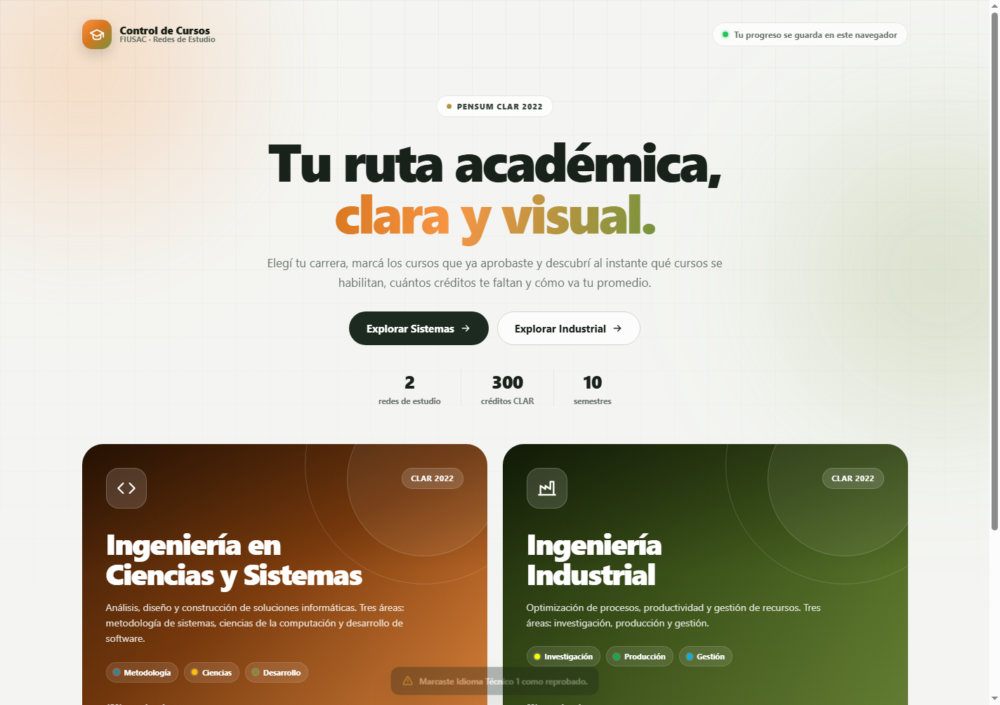
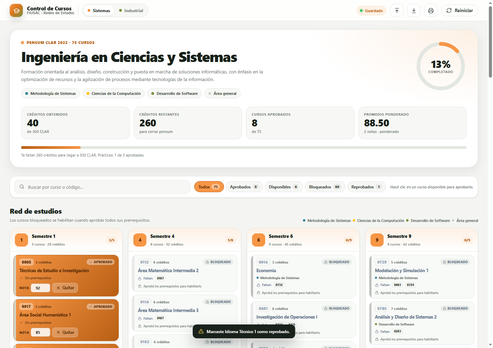
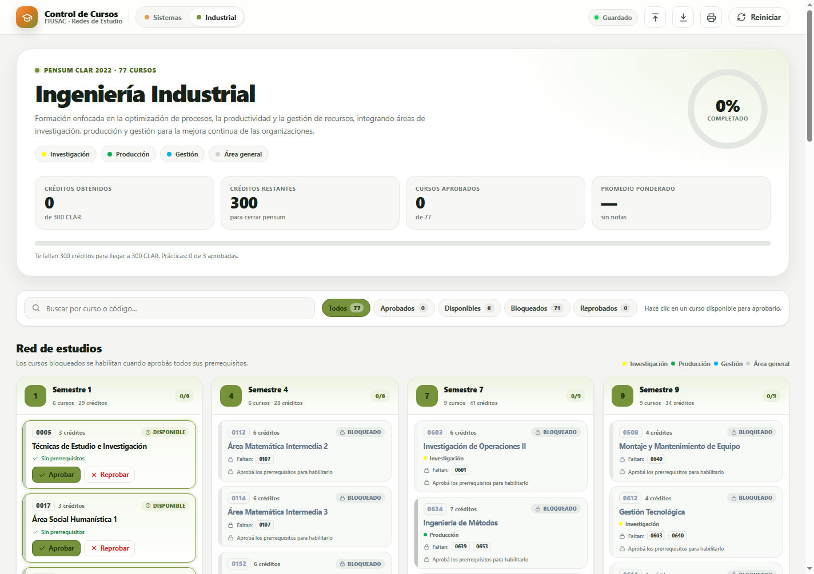
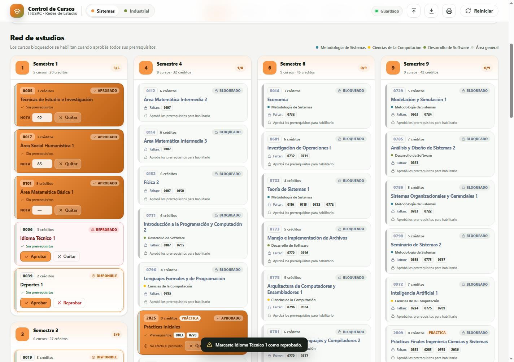
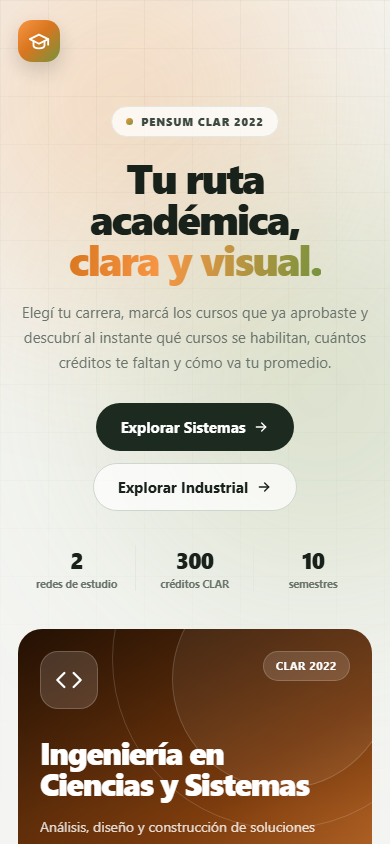
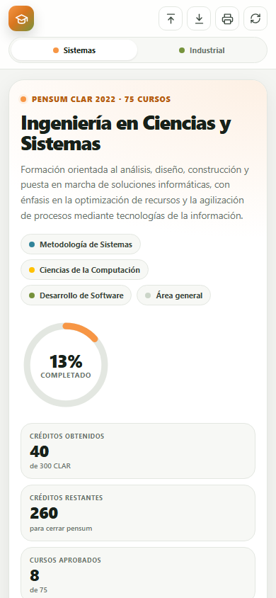

01 Qué es esta herramienta
Es una página web para llevar tu avance académico en las redes de estudio de Ingeniería en Ciencias y Sistemas y Ingeniería Industrial de la FIUSAC, Pensum CLAR 2022.
Con ella podés:
- Ver todos los cursos organizados por semestre.
- Marcar los cursos que ya aprobaste o reprobaste.
- Saber qué cursos se habilitan al aprobar sus prerrequisitos.
- Consultar cuántos créditos llevás y cuántos te faltan para los 300 CLAR.
- Calcular tu promedio ponderado.
- Guardar tu avance y descargar un respaldo.
No necesitás crear una cuenta ni instalar nada.

02 Antes de empezar
Solo necesitás:
- Un navegador actualizado: Chrome, Edge, Firefox o Safari.
- Conexión a internet para abrir la página por primera vez.
- Un dispositivo donde guardar tu progreso. Funciona en computadora, tablet y celular.
El progreso se guarda en este navegador, no en una cuenta. Si cambiás de dispositivo o borrás los datos del navegador, necesitás un respaldo exportado.
03 Entrar y elegir carrera
-
Abrí la aplicación
Entrá a la página principal desde tu navegador.
-
Elegí tu carrera
En la portada vas a ver dos tarjetas: Ingeniería en Ciencias y Sistemas (naranja) e Ingeniería Industrial (verde).
-
Abrí la red
Hacé clic en Abrir red o en cualquiera de las tarjetas.
-
Volvé cuando quieras
La aplicación recuerda la última carrera que abriste. Para volver a la portada, usá el logo Control de Cursos.
También podés cambiar de carrera desde la barra superior con los botones Sistemas e Industrial. El avance de cada carrera se guarda por separado.
04 Entender la pantalla
Resumen superior
- Nombre de la carrera y pensum.
- Anillo de avance: porcentaje de créditos CLAR completados.
- Créditos obtenidos: suma de créditos de cursos aprobados.
- Créditos restantes: lo que falta para llegar a 300.
- Cursos aprobados: cantidad de cursos aprobados sobre el total.
- Promedio ponderado: promedio de los cursos aprobados con nota.
- Barra de progreso: avance visual hacia los 300 CLAR.
Barra de herramientas
- Buscador: encontrá un curso por nombre o código. No importa si escribís con o sin tildes.
- Filtros: Todos, Aprobados, Disponibles, Bloqueados y Reprobados.
- Contador: cada filtro muestra cuántos cursos tiene.
Red de estudios
Es la malla curricular completa. Cada semestre aparece en una tarjeta con su número, nombre, cantidad de cursos y créditos. Dentro de cada curso vas a ver el código, el nombre, los créditos, el área, el estado, los prerrequisitos y los botones para marcarlo.


Notas y promedio
- Tabla con todos los cursos aprobados.
- Campo para escribir la nota de cada curso.
- Promedio ponderado, promedio simple, notas registradas y créditos con nota.
- Botón Copiar resumen para pegar tu avance en WhatsApp, correo o un documento.
05 Estados de un curso
Ya aprobaste el curso. Suma créditos y podés cargar la nota. Se pinta con el color vivo de la carrera.
Podés marcarlo porque no tiene prerrequisitos pendientes. Aparece resaltado con borde.
Todavía te falta aprobar uno o más prerrequisitos. Se ve en gris y no se puede marcar.
Marcaste el curso como reprobado. No suma créditos, pero podés aprobarlo después.
Los cursos de primer semestre y los que no tienen prerrequisitos están disponibles desde el inicio.
06 Marcar cursos
Aprobar un curso
Tenés dos formas:
- Hacé clic sobre la tarjeta del curso disponible.
- O usá el botón Aprobar dentro de la tarjeta.
Al aprobarlo:
- La tarjeta cambia al color de la carrera.
- Se suman sus créditos.
- Se habilitan los cursos cuyos prerrequisitos ya están completos.
- Aparece en la tabla de Notas y promedio.
Reprobar un curso
- El curso debe estar disponible.
- Usá el botón Reprobar.
- La tarjeta queda en rojo y no suma créditos.
Si después querés aprobarlo, hacé clic en la tarjeta o usá Aprobar.
Quitar un curso
En un curso aprobado o reprobado, usá Quitar para dejarlo nuevamente como estaba antes de marcarlo.
Si quitás un curso, también podrían volver a bloquearse los cursos que dependían de él.
No podés aprobar un curso bloqueado. Primero tenés que aprobar todos sus prerrequisitos.
07 Prerrequisitos y desbloqueo
Cada curso muestra una línea con sus prerrequisitos:
- Sin prerrequisitos: el curso está disponible desde el inicio.
- Prerrequisitos: aparecen los códigos que necesita.
- Faltan: muestra en rojo o gris los códigos que todavía no aprobaste.
- Prerrequisitos completos: el curso se habilita automáticamente.
Ejemplo:
Faltan: 0101 0103
Significa que necesitás aprobar los cursos 0101 y 0103 antes de habilitar
ese curso. Cuando aprobás uno, la aplicación revisa toda la red y resalta los cursos que se desbloquearon.

08 Créditos y avance a 300 CLAR
La red de estudios de Sistemas suma 351 créditos y la de Industrial 349, pero el pensum se cierra con 300 CLAR. Cada semestre equivale a 30 CLAR.
La aplicación muestra:
- Créditos obtenidos: suma de los créditos de todos los cursos aprobados.
- Créditos restantes:
300 − créditos obtenidos. - Porcentaje: avance hacia los 300 CLAR.
- Cursos aprobados: cantidad de cursos, no de créditos.
Si tus cursos aprobados superan los 300 créditos, el anillo y la barra se quedan en 100 %, pero el contador de créditos sigue mostrando el total real.
Las prácticas de 0 créditos no suman créditos, pero sí cuentan como cursos aprobados.
09 Notas y promedio
Cargar una nota
-
Aprobá un curso
El curso debe tener créditos mayores que 0.
-
Escribí la nota
En la tarjeta del curso o en la tabla de Notas y promedio, ingresá un número entre 0 y 100.
-
Mirá el resultado
El promedio se actualiza automáticamente.
Cómo se calcula el promedio ponderado
suma(nota × créditos) / suma(créditos con nota)Ejemplo:
| Curso | Créditos | Nota | Nota × créditos |
|---|---|---|---|
| Curso A | 4 | 80 | 320 |
| Curso B | 3 | 90 | 270 |
| Total | 7 | — | 590 |
Promedio ponderado: 590 / 7 = 84.29.
Reglas del promedio
- Solo participan cursos aprobados.
- Solo participan cursos con créditos mayores que 0.
- Solo participan cursos con nota registrada.
- Un curso aprobado sin nota suma créditos, pero no afecta el promedio.
- Las prácticas de 0 créditos nunca afectan el promedio.
- Si la nota es menor que 61, la aplicación muestra una advertencia, pero guarda el valor.
- El promedio simple es el promedio de las notas, sin considerar créditos. Es solo una referencia.
El botón Limpiar notas borra las notas de la carrera actual, pero conserva los cursos aprobados.
10 Prácticas de 0 créditos
Las prácticas Iniciales, Intermedias y Finales tienen 0 créditos.
- Se marcan como aprobadas o reprobadas.
- No tienen campo de nota.
- No suman créditos.
- No afectan el promedio.
- Sí cuentan en la cantidad de cursos aprobados.
En la tabla de notas aparecen con la leyenda No aplica en la columna de nota.
11 Buscar y filtrar
Buscar
- Escribí el nombre o el código en el buscador.
- La lista se filtra al instante.
- La búsqueda ignora tildes y mayúsculas:
fisicaencuentraFísica. - Usá la × para limpiar la búsqueda.
Filtrar
- Todos: muestra la red completa.
- Aprobados: solo cursos aprobados.
- Disponibles: cursos que podés marcar ahora.
- Bloqueados: cursos con prerrequisitos pendientes.
- Reprobados: cursos marcados como reprobados.
Los filtros y la búsqueda se pueden combinar.
12 Guardado y respaldo
Guardado automático
La aplicación guarda el progreso automáticamente en el navegador. Arriba a la derecha aparece el estado Guardado cuando terminó de guardar.
Se guardan:
- La carrera activa.
- Los cursos aprobados y reprobados.
- Las notas.
- La fecha de actualización.
Exportar un respaldo
-
Hacé clic en Exportar
Es el botón con la flecha hacia abajo en la barra superior.
-
Guardá el archivo
Se descarga
control-cursos-fiusac-AAAA-MM-DD.json. Guardalo en Google Drive, correo, USB o donde prefieras.
El archivo incluye el progreso de ambas carreras.
Importar un respaldo
-
Hacé clic en Importar
Es el botón con la flecha hacia arriba.
-
Elegí el archivo .json
Seleccioná el respaldo que exportaste antes.
-
Revisá el resultado
La aplicación combina el respaldo con lo que ya tenés. Si un curso coincide, se usa el estado del archivo importado.
Exportá un respaldo antes de cambiar de dispositivo, antes de limpiar el navegador y antes de hacer cambios grandes.
Copiar resumen
El botón Copiar resumen copia un texto con tus créditos, cursos aprobados, promedio y materias. Después podés pegarlo donde quieras.
13 Imprimir o guardar en PDF
-
Hacé clic en Imprimir
Es el botón con el ícono de impresora en la barra superior.
-
Elegí Guardar como PDF
En el diálogo de impresión del navegador, seleccioná esa opción si querés un archivo.
-
Ajustá el papel
Podés cambiar el tamaño de hoja y los márgenes antes de guardar.
El reporte incluye:
- Nombre de la carrera y pensum.
- Fecha de generación.
- Resumen de créditos y promedio.
- Red de estudios completa con los estados.
- Tabla de notas.
La impresión muestra todos los cursos, aunque tengas un filtro o una búsqueda activa. Al cerrar el diálogo, la vista vuelve a como estaba.
14 Reiniciar el progreso
-
Hacé clic en Reiniciar
Está en la barra superior. En el celular aparece como un ícono compacto.
-
Leé la confirmación
La aplicación te avisa qué se va a borrar.
-
Confirmá
Elegí Sí, reiniciar para borrar el progreso de la carrera actual.
Se borran:
- Cursos aprobados.
- Cursos reprobados.
- Notas.
No se borra el progreso de la otra carrera. Si querés borrar todo, repetí el proceso en ambas carreras.
Exportá un respaldo si querés conservar tu avance.
15 Usar la aplicación en el celular
La página está adaptada para pantallas pequeñas:
- La barra superior muestra el logo y los botones de acción arriba, y el selector de carrera abajo.
- El resumen se acomoda en una columna.
- La red de estudios se muestra en una sola columna.
- La tabla de notas oculta la columna de estado para evitar desplazamientos horizontales.
- Los botones de acción siguen disponibles, incluido Reiniciar como ícono.
Para agregarla a la pantalla de inicio:
- Android/Chrome: menú de tres puntos → Agregar a la pantalla principal.
- iPhone/Safari: botón Compartir → Agregar a la pantalla de inicio.


16 Preguntas frecuentes
¿Necesito crear una cuenta?
No. La aplicación no tiene cuentas ni contraseñas.
¿Dónde se guarda mi progreso?
En el almacenamiento local (localStorage) de tu navegador, bajo la clave control-cursos-fiusac:v1.
¿Se sincroniza entre mi computadora y mi celular?
No automáticamente. Para pasarlo, exportá el JSON en un dispositivo e importalo en el otro.
¿Qué pasa si borro el historial o los datos del navegador?
Se puede borrar el progreso. Exportá un respaldo con frecuencia.
¿Funciona en modo incógnito?
Sí, pero el progreso se borra al cerrar la ventana incógnita. No lo uses para guardar a largo plazo.
¿Puedo aprobar un curso bloqueado?
No. Primero tenés que aprobar todos sus prerrequisitos.
¿Por qué un curso aprobado no cambia mi promedio?
Porque no tiene nota, porque tiene 0 créditos o porque está reprobado. El promedio solo usa cursos aprobados, con créditos y con nota.
¿Por qué la práctica no tiene nota?
Porque las prácticas de 0 créditos solo se aprueban o se reprueban y no afectan el promedio.
¿Qué significa que falten créditos si ya aprobé todos los cursos?
La red puede sumar más de 300 créditos. La meta es cerrar 300 CLAR. Si ya llegaste, el anillo muestra 100 %.
¿Los datos son oficiales?
Los cursos y prerrequisitos se tomaron de las redes de estudio oficiales del Pensum CLAR 2022, pero esta es una herramienta de apoyo. Confirmá cualquier duda con la Facultad de Ingeniería.
¿Puedo usar la página sin internet?
Una vez cargada, puede seguir funcionando, pero para abrirla de nuevo necesitás conexión o una copia local. Si la descargás, abrí index.html en el navegador.
17 Privacidad
- No hay servidor propio ni base de datos.
- No se envían tus cursos ni notas a ningún lugar.
- No hay analítica ni cookies de seguimiento.
- El progreso queda en tu navegador.
- El archivo JSON que exportás contiene solo la carrera activa, los estados, las notas y la fecha.
18 Glosario
- CLAR
- Créditos del pensum de la FIUSAC.
- Red de estudios
- Organización de los cursos por semestre y prerrequisitos.
- Prerrequisito
- Curso que tenés que aprobar antes de habilitar otro.
- Curso disponible
- Curso que ya podés marcar porque no tiene prerrequisitos pendientes.
- Curso bloqueado
- Curso que todavía no podés marcar.
- Promedio ponderado
- Promedio que considera los créditos de cada curso.
- Promedio simple
- Promedio de las notas, sin considerar créditos.
- Práctica de 0 créditos
- Práctica que se aprueba o reprueba, pero no suma créditos ni afecta el promedio.
- localStorage
- Almacenamiento del navegador donde se guarda el progreso.
? ¿Problemas o sugerencias?
Si encontrás un error, podés abrir un issue en el repositorio: github.com/jonathan-zamora/Control-de-Cursos-Aprobados/issues.
Incluí, si podés:
- La carrera y el curso.
- El estado que esperabas y el que viste.
- Una captura de pantalla.
- El navegador y el dispositivo que usaste.
Abrí tu red de estudios y marcá tu primer curso.